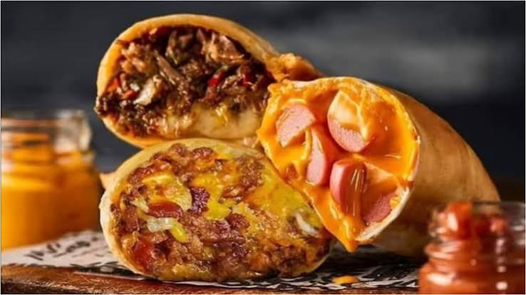

McDonald's
Hamburguesas, papas fritas y más.
Ver restauranteLa mejor comida de tus lugares favoritos, directo a tu puerta
En AlToque creemos que elegir qué comer debería ser tan fácil como disfrutarlo. Encontrá opciones cerca tuyo, hacé tu pedido y seguí cada paso hasta que llegue.
Elegí dónde pedirExplorá restaurantes y platos para encontrar justo lo que tenés ganas de comer.
Revisá los detalles y seleccioná la forma de pago que más te convenga.
Seguí el recorrido y prepará la mesa: tu comida ya está en camino.
Estos son los tres restaurantes más pedidos en AlToque.
Hamburguesas, papas fritas y más.
Ver restaurante
Empanadas, pizzas y opciones para compartir.
Ver restaurante
Hamburguesas, papas fritas y sándwiches.
Ver restauranteRepartimos comida rápida rica y práctica, ideal para disfrutar sin complicaciones.
Significa tener más tiempo para lo que importa. Nuestra propuesta reúne comercios de tu zona y repartidores para que pedir sea simple, claro y cómodo.
Más info en nuestro Instagram.